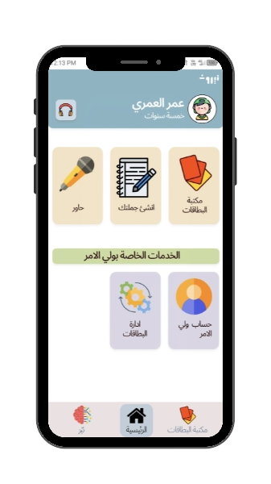

The Problem
Communication barriers leave many children unheard—and families searching for answers.
30%
Of autistic children don't develop functional spoken language

- Difficulty expressing needs and emotions
- Increased frustration and behavioral challenges
- Social isolation and reduced independence
Traditional Augmentative and Alternative Communication (AAC) systems are not effective for every child.